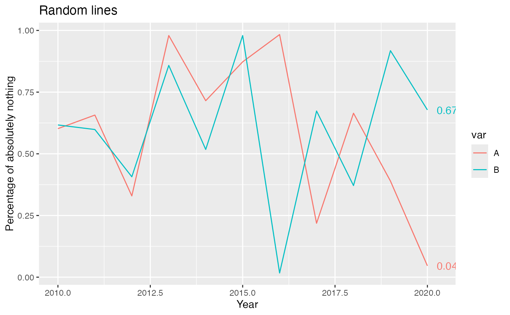
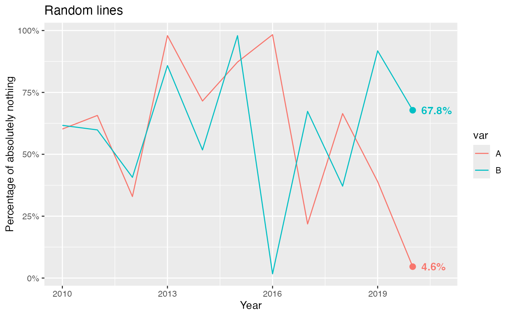

Label only the last point(s) on a plot. geom_text_lastonly() can be
used instead of ggplot2::geom_text() when only the last point(s)
should be labeled. This is accomplished by identifying the maximum value of
x in data and applying a filter to omit records where x
is less than the maximum.
geom_text_lastonly(
mapping = NULL,
data = NULL,
stat = "identity",
position = NULL,
parse = FALSE,
nudge_x = 0.25,
nudge_y = 0,
check_overlap = FALSE,
na.rm = FALSE,
show.legend = FALSE,
inherit.aes = TRUE,
add_points = FALSE,
text_aes = NULL,
point_aes = NULL,
...
)Set of aesthetic mappings created by aes(). If specified and
inherit.aes = TRUE (the default), it is combined with the default mapping
at the top level of the plot. You must supply mapping if there is no plot
mapping.
The data to be displayed in this layer. There are three options:
If NULL, the default, the data is inherited from the plot
data as specified in the call to ggplot().
A data.frame, or other object, will override the plot
data. All objects will be fortified to produce a data frame. See
fortify() for which variables will be created.
A function will be called with a single argument,
the plot data. The return value must be a data.frame, and
will be used as the layer data. A function can be created
from a formula (e.g. ~ head(.x, 10)).
The statistical transformation to use on the data for this
layer, either as a ggproto Geom subclass or as a string naming the
stat stripped of the stat_ prefix (e.g. "count" rather than
"stat_count")
Position adjustment, either as a string, or the result of a
call to a position adjustment function. Cannot be jointy specified with
nudge_x or nudge_y.
If TRUE, the labels will be parsed into expressions and
displayed as described in ?plotmath.
Horizontal and vertical adjustment to nudge labels by.
Useful for offsetting text from points, particularly on discrete scales.
Cannot be jointy specified with position.
If TRUE, text that overlaps previous text in the
same layer will not be plotted. check_overlap happens at draw time
and in the order of the data. Therefore data should be arranged by the
label column before calling geom_text_lastonly().
If FALSE, the default, missing values are removed with
a warning. If TRUE, missing values are silently removed.
logical. Should this layer be included in the legends?
NA, the default, includes if any aesthetics are mapped.
FALSE never includes, and TRUE always includes.
It can also be a named logical vector to finely select the aesthetics to
display.
If FALSE, overrides the default aesthetics,
rather than combining with them. This is most useful for helper functions
that define both data and aesthetics and shouldn't inherit behaviour from
the default plot specification, e.g. borders().
If TRUE, points will be added to the plot (for the
labeled data only). Default size=2, color will match line color.
Named list, additional aesthetics to send to the text and point geoms, respectively.
Additional aesthetics to send to BOTH the point and text geoms.
Note that if add_points = FALSE, additional parameters can be passed
to the text geom here, rather than in text_aes, without breaking.
Labels are placed by default to the right of the final point, and may be partially cut off by the plot limits. There are two known ways to address this:
Turn off panel clipping, e.g. with
coord_cartesian(clip = "off"). Substitute the correct coordinate
system for your plot--all have a clip argument available. Note that
this will allow all geoms in the plot to draw outside the panel area, which
may have unintended consequences.
Manually expand the x scale,
e.g. with scale_x_continuous(expand=expand_scale(mult=0.10)) or
coord_cartesian(xlim = c(min, max)).
Code was mostly copied from the source of ggplot2::geom_text() and
ggplot2::geom_point().
df <- data.frame(year=2010:2020, value=runif(22), var=c(rep("A", 11), rep("B", 11)))
# Without points, label formatting or x-axis expansion
ggplot(df, aes(x=year, y=value, color=var)) +
geom_line() +
labs(title="Random lines") +
scale_y_continuous("Percentage of absolutely nothing") +
scale_x_continuous("Year") +
geom_text_lastonly()

# With points, label formatting and x-axis expansion
ggplot(df, aes(x=year, y=value, color=var, label=sprintf("%.1f%%", 100*value))) +
geom_line() +
labs(title="Random lines") +
scale_y_continuous("Percentage of absolutely nothing", labels=scales::percent) +
scale_x_continuous("Year", expand=expansion(mult=c(0.05, 0.10))) +
geom_text_lastonly(add_points=TRUE, text_aes=list(fontface="bold"), point_aes=list(size=2.5))
